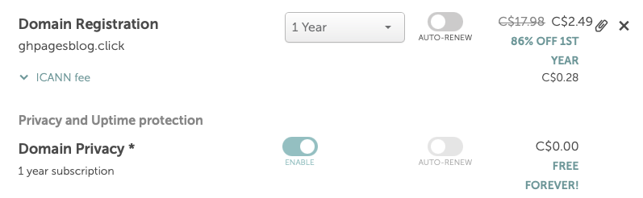
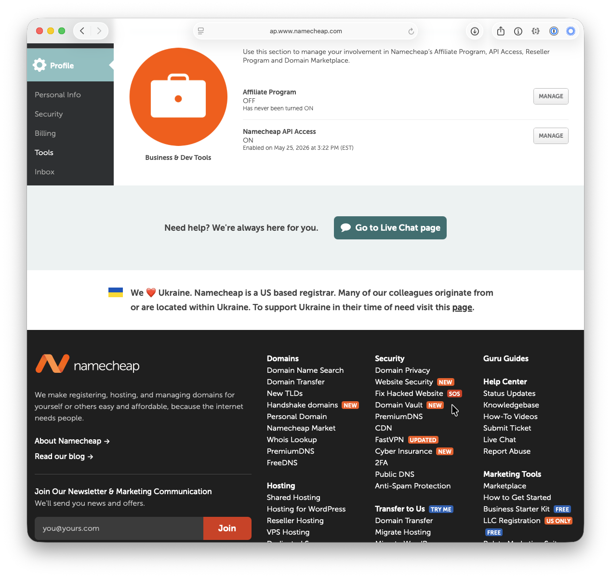
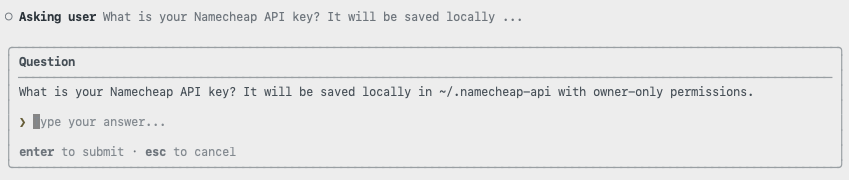
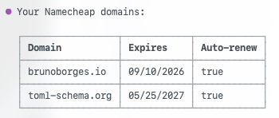
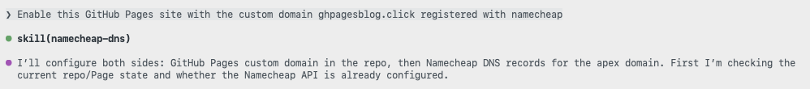
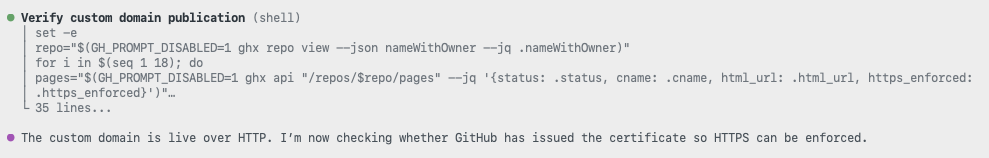
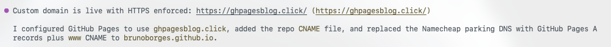

From Zero to a Live Site on a Custom Domain — Without Touching DNS
Let me tell you about my favorite kind of afternoon project: the one that should be a pain, but isn't.
The story goes like this. I built a little website, published it, and
then thought, "you know what this deserves? A real domain." Normally
that's where the fun ends and the DNS headache begins — A
records, CNAME entries, TTLs, the whole rabbit hole. It's a
lot, especially if you don't dream in DNS.
So I did the lazy-genius thing: I let an AI assistant do the DNS work for me.
Here's the plan: stand up a site on GitHub Pages, buy a dirt-cheap domain, and then wire the two together using GitHub Copilot CLI and a Namecheap skill. The best part? I never touched a single DNS record by hand. Let's go!
Step 1: Build the site and publish it with GitHub Pages
Every story needs something worth sharing, so let's start there.
First, a public repository:


Then I just asked Copilot to create a landing page and turn on GitHub Pages. No clicking through settings menus — I described what I wanted, and it did the work:

And just like that, the site is live on a github.io URL.
Great start — but a little plain. Let's give it a proper address.
Step 2: Buy a (very) cheap domain
For this blog I grabbed one of the cheapest TLDs out there:
.click.


Final damage? USD $2.00 — about CAD $2.46. Two bucks. For a real domain. I'll take it.
Now I own a domain and I have a site. Time to introduce them.
Step 3: Wire it up
This is the part I usually dread. Here's where the AI assistant earns its keep.
Flip on Namecheap API access
First, we need to let Namecheap's API in. Head to Profile → Tools, scroll all the way down to Business & Dev Tools, and click Manage under Namecheap API Access.

Shortcut for the impatient (that's me): log in and go straight to https://ap.www.namecheap.com/settings/tools/apiaccess/ (heads up — this URL may change down the road).
On that page, three quick things:
- Toggle the API to ON.
- Add the public IP of the machine that'll talk to the API to the Whitelisted IPs list.
- Copy that API Key and stash it somewhere safe. You'll want it in a minute.

That's it — Namecheap is now scriptable.
Install the Namecheap skill
Now let's give our AI assistant superpowers. Enable the Namecheap skill.
On a machine running GitHub Copilot CLI, it's a one-liner:
gh skill install brunoborges/namecheap-skill namecheap-dns --scope userThe first time you ask Copilot something like "list my Namecheap domains", it checks that the skill is wired up. On that first run, it'll ask for your username:

Type it in. Then it asks for the API key (told you you'd need it):

And boom — Copilot hands back the list of domains in your account:

Easy peasy. 🎉
Point the domain at GitHub Pages
Now the moment of truth — connecting that fresh domain to the site:

It'll check in with a question or two before changing anything (good — I like an assistant that asks before it rewrites my DNS):

And then it does the heavy lifting — swapping the parking records for
GitHub Pages' A records and the www
CNAME. This is the exact part I usually dread, and I just…
watched it happen:

It even handled the repo side, adding a CNAME file with
the custom domain:

Step 4: Did it actually work? Let's verify
Of course, Copilot doesn't just claim victory — it checks. It confirmed the domain resolves:

…and that the site returns a healthy HTTP 200:

Want the receipts? The entire Copilot CLI session is right here: https://gist.github.com/brunoborges/167c988a0c4c16b8ccffca995ae98ce2
I bought the domain at 11:21:27 AM EDT.

And the site was live at around 11:35 AM EDT. Do the math — that's roughly 14 minutes from "I own nothing" to "it's on the internet with HTTPS." 🚀

So, was it worth it?
Honestly? Yeah. Building a GitHub Pages site, buying a domain, and wiring up a custom domain with HTTPS — start to finish in about 14 minutes, and I didn't touch a single DNS record myself. The combo of GitHub Copilot CLI and the Namecheap skill turned a classically fiddly chore into a quick conversation.
Give it a shot, and let me know how it goes! 🇧🇷